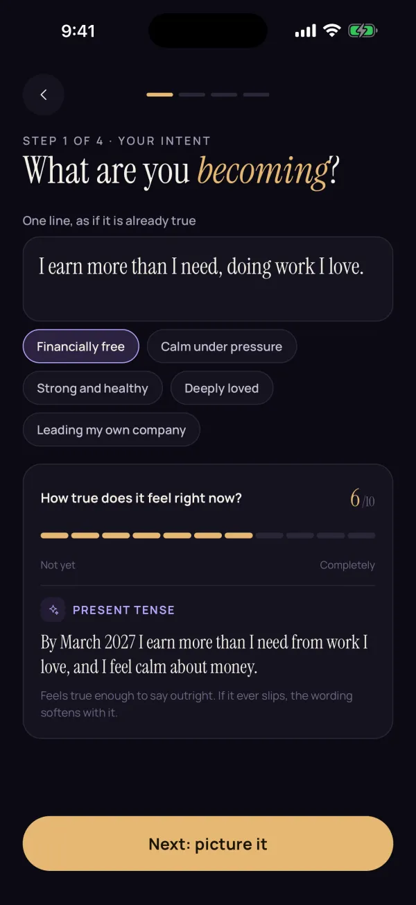
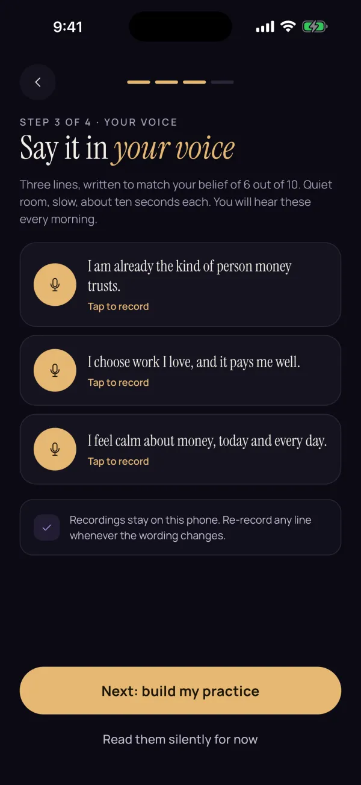

A seven-minute morning practice for iPhone
See it.
Say it.
Become it.
Affirm in your own voice, see the morning you are working toward, and take one real step before the day begins.
- Free no subscription, no in-app purchases
- No account nothing to sign up for
- On your phone nothing you write or record leaves it
0:00 Breathe
One minute
A slow ring settles you before your phone gets a say in your day.
Let the ring set the pace. Shoulders down.
This ring keeps the app’s pace: an eight-second loop, four seconds growing as you breathe in, four easing back as you breathe out. With Reduce Motion on, it holds still.
1:00 Affirm
Two minutes
Three lines, recorded once in your own voice, about ten seconds each. Each morning you hear yourself say them, forty seconds a line.
Lines that feel false can backfire. So every day you say how true it feels, and the wording moves with you.
Present tense
- I am already the kind of person money trusts.
- I choose work I love, and it pays me well.
- I feel calm about money, today and every day.
Feels true enough to say outright. If it ever slips, the wording softens with it.
Below 5 out of 10 the same lines switch to bridge wording, for example “I am becoming the kind of person money trusts.”
The sample lines and both wordings are the app’s own. The rule is the app’s rule: under 5, bridge wording; 5 and up, present tense.


3:00 See
Two minutes
At setup you write three to five sentences about a morning when this is already true. Here you step into it for a minute, then rehearse the steps that lead there for a minute.
Scene cues
- Hear
- Birds. A kettle inside. No traffic.
- Feel
- Warm cup. Cool air. Nowhere to rush.
- Think
- “The invoice cleared. I chose this.”
Step 1 of 3
Open the laptop and send one proposal before checking anything else.
See yourself doing it, not just done. Where are your hands? What happens first?
The steps that lead here
- Open the laptop and send one proposal before checking anything else.
- Say no to the one request that does not fit the plan.
- Move 10% of what came in today into the buffer account.
In version 1.0 the scene is an illustration, not a photo or a generated image. The words on the card come from the app.
5:00 Act
Two minutes
One obstacle. One plan. Name what is most likely to get in the way today, and decide now what you will do when it shows up.
In the app you edit the “then” in your own words, or pick “Something else” and write both halves. Every plan is saved to your journal, so you keep an honest record of what you set out to do.
7:00 Done for this morning
Why these four steps
Affirmations far beyond your belief backfire,1 so the wording follows how true it feels today. People who meet a vivid, specific version of their future self make better long-term choices.2 Picturing the process improved effort and results; picturing only the outcome did not.3 Positive fantasy alone lowers effort, while mental contrasting with if-then plans raises goal attainment.4
The effects are real and modest. Your actions do the work; the practice makes them more likely.
References
At night there is a shorter session: three minutes, Affirm and See only, lights low.
Questions
Is this manifestation?
It is the part of manifestation that holds up: a specific intent, believable self-talk, vivid rehearsal, and a daily action. We leave out the promises.
What happens to my voice recordings and writing?
Nothing leaves your phone. Recordings, your writing and your journal are stored only on the device. There is no account to create. Details in the privacy policy.
Do I have to record my voice?
No. The microphone is optional. Choose “Read them silently for now” and record later from the You tab.
How long before I notice anything?
We do not promise a timeline. The first cycle is 21 days, and that is a first cycle, not a finish line: habits take closer to two months, and one missed day does not reset your streak.
Where does the moon come in?
Only as rhythm. The Today screen shows the moon phase next to your day of the 21-day cycle, and you can turn Moon rhythm off. A cadence you may like, not a force.
Is it free?
Yes. No subscription, no in-app purchases and no account.
Android?
iPhone first. Android follows. Email support@toinfy.com and we will tell you the day it ships.
Start tomorrow morning.
Seven minutes. One intent. Free.
Coming to the App StoreQuestions, or want a note when it is out? support@toinfy.com